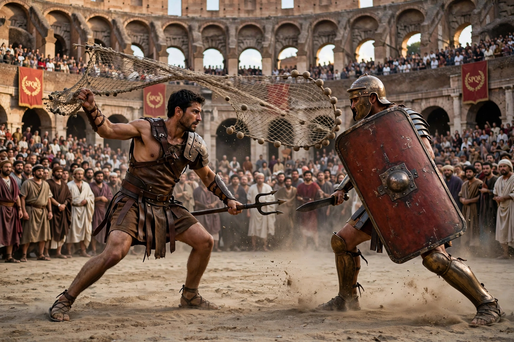

| Gladiator | |
|---|---|
 Gladiators in combat in the arena | |
| Era | 753 BCE – c. 5th century CE (Roman world) |
| Venues | Amphitheatres, incl. the Colosseum |
| Status | Mostly enslaved men; some free volunteers |
A gladiator (Latin: gladiator, "swordsman", from gladius, "sword") was an armed combatant who entertained audiences in the Roman Republic and Roman Empire in violent confrontations with other gladiators, wild animals, and condemned criminals. Gladiatorial games (munera) were among the most popular spectacles of the Roman world for nearly a thousand years.
Gladiatorial combat likely originated in funerary rites: the first recorded Roman games were held in 264 BCE at the funeral of Decimus Junius Brutus. Over time the games grew into lavish public spectacles sponsored by politicians and emperors. The opening of the Colosseum in 80 CE under Titus marked the peak of the institution; games continued until gladiatorial combat faded in the 5th century CE under Christian emperors.
Most gladiators were slaves, prisoners of war or condemned criminals, though free men sometimes volunteered (auctorati) for pay and fame. Recruits trained in special schools (ludi) under a manager (lanista), ate a famously starchy diet — gladiators were nicknamed hordearii, "barley men" — and received skilled medical care. Fights were refereed and did not always end in death; a defeated gladiator could appeal for mercy (missio), and successful fighters could win money, fame and eventually freedom, symbolised by a wooden sword (rudis).
Gladiators fought in standardised classes with distinctive equipment, often paired in complementary match-ups: the net-and-trident retiarius against the heavily armoured secutor; the Thracian-style thraex against the murmillo with his large shield and fish-crested helmet; also hoplomachi, provocatores, chariot-fighting essedarii and others. Female gladiators (gladiatrices) existed but were rare and eventually banned.
The most famous gladiator is Spartacus, a Thracian who escaped from a school at Capua in 73 BCE and led a major slave revolt against Rome. Others, such as the Syrian retiarius Flamma, who fought 34 bouts, became celebrities whose images decorated lamps, mosaics and graffiti.